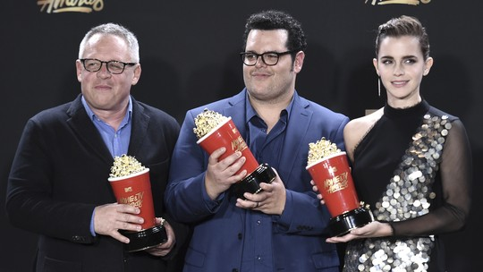

Portal Crescer
Jennifer Morrison anuncia que sairá do elenco de 'Once upon a time'

Jennifer Morrison, protagonista de "Once upon a time", anunciou nas redes sociais que deixará o elenco fixo da série. "Decidi que, criativamente e pessoalmente, é hora de seguir em frente", disse a atriz, que participou das seis primeiras temporadas da atração, produzida pelo canal americano ABC.
Ela interpreta Emma Swan, filha da Branca de Neve (Ginnifer Goodwin) e do Príncipe Encantado (Josh Dallas), que é a única esperança para quebrar a maldição dos moradores da cidade fictícia de Storybrooke. Na história, todos eles são personagens de contos de fadas que perderam a memória de suas vidas na Floresta Encantada e foram transportados para o "mundo real".
“Emma Swan é uma das personagens preferidas que já interpretei. Meus seis anos em 'Once upon a time' mudaram a minha vida da maneira mais bonita", escreveu Morrison. No texto, ela conta que a ABC e os criadores da série, Adam Horowitz e Edward Kitsis, convidaram-na para continuar na trama, após o fim do contrato de seis anos, mas que decidiu se dedicar a "outros desafios criativos".
A ABC ainda não confirmou a renovação de "Once upon a time" para uma sétima temporada. A atriz afirma que concordou em aparecer em um dos novos episódios, caso seja mesmo produzida uma nova leva. "Continuarei a atender convenções de fãs sempre que minha agenda profissional permitir (...) e certamente continuarei a assistir a 'Once upon a time'."
Em uma declaração enviada ao site da revista "Entertainment Weekly", Horowitz e Kitsis disseram que, em seus seis anos na série, Morrison deu vida a um novo tipo de princesa da Disney, "cheio de força e inteligência". "Nós vamos sentir falta de vê-la todos os dias, mas a sua marca em 'Once upon a time' é eterna. Ela sempre será uma parte da série, de seu coração e sua alma."
'A Bela e a Fera' e 'Stranger things' levam principais prêmios nos MTV Awards
Emma Watson fez discurso emocionado sobre filme que 'celebra diversidade e inclusão'. Premiação mudou para tirar distinção de gênero de categorias; veja lista de ganhadores

A nostálgica série de terror "Stranger things" e o remake de "A Bela e a Fera" compartilharam neste domingo (7) os grandes prêmios MTV Movie and TV Awards, que este ano mudaram para consagrar também atrações de TV.
A produção da Netflix faturou os prêmios de melhor programa de TV e melhor ator para uma emocionada Millie Bobby Brown, uma de suas jovens estrelas. Já Emma Watson ganhou pelo papel de Bela na versão com atores reais do clássico da Disney, que também levou a estatueta de melhor filme.
"O povoado no nosso pequeno conto de fadas queria fazer Bela acreditar que nosso mundo era menor do que o que ela via. Adorei interpretar alguém que não escutou nada disso. Estou orgulhosa de fazer parte deste filme que celebra a diversidade, a alfabetização, a inclusão, a alegria e o amor", disse Watson, de 27 anos, ao receber o prêmio.
Daniel Kaluuya e Milton "Lil Rel" Howery, estrelas do thriller "Huye", ganharam os prêmios de próxima geração e melhor papel de comédia, respectivamente.
O prêmio de melhor vilão foi para Jeffrey Dean Morgan, como o sanguinário Negan em "The walking dead", enquanto o de melhor herói foi para Taraji P. Henson, por "Estrelas além do Tempo".
'Sense8' tem 2ª temporada mais ambiciosa e complexa, dizem atores da série
Filmagens da nova temporada da seriado, das criadoras de 'Matrix', demoraram oito meses e aconteceram em 17 cidades diferentes.
Lutas espetaculares, mundos paralelos, um toque de metafísica: os criadores de "Matrix" recuperam alguns elementos de sua famosa trilogia para a série "Sense8", mas vão ainda mais longe, com uma sobreposição de mundos em uma série difícil de classificar.
O conceito da série é ambicioso, com um relato que acompanha de modo paralelo oito personagens que vivem em pontos diferentes do mundo, em quatro continentes.
A imprensa americana afirma que a produção de cada um dos 10 episódios da segunda temporada, disponível desde sexta-feira no Netflix, custou nove milhões de dólares, um valor não confirmado pela plataforma de vídeo.
As filmagens da nova temporada demoraram oito meses, em 17 cidades diferentes, explicou à AFP Tina Desai, que interpreta na série a indiana Kala Dandekar.
Esta pode ser a primeira série realmente mundial, de acordo com o modelo da Netflix, presente em mais de 190 países.
"Isto torna tudo mais complexo, mais difícil, mas uma vez que você se acostuma ao estilo narrativo é divertido", comentou Max Riemelt, que interpreta o alemão Wolfgang Bogdanow. "As pessoas adoram este tipo de série. Não querem mais ver algo pré-fabricado, fácil de consumir", completa.
A segunda temporada foi comandada por Lana Wachowski, antes Larry Wachowski e que fez o anúncio da mudança de gênero no início da década. Ela dirigiu sozinha quase toda a segunda temporada, sem a sua irmã Lilly, corroteirista e anteriormente Andy Wachowski, que mudou de nome e gênero em 2016.
A dupla foi responsável pela direção e roteiros da trilogia "Matrix".